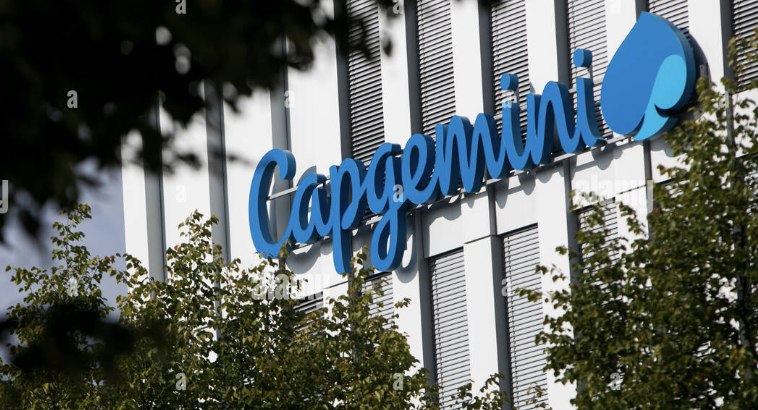
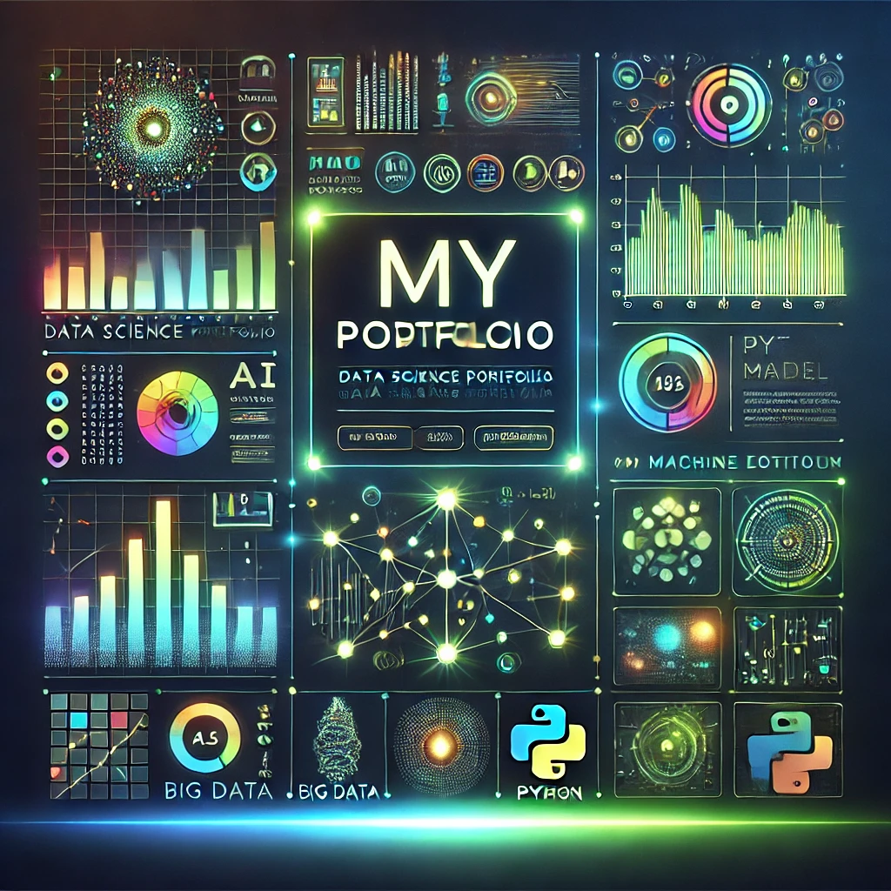
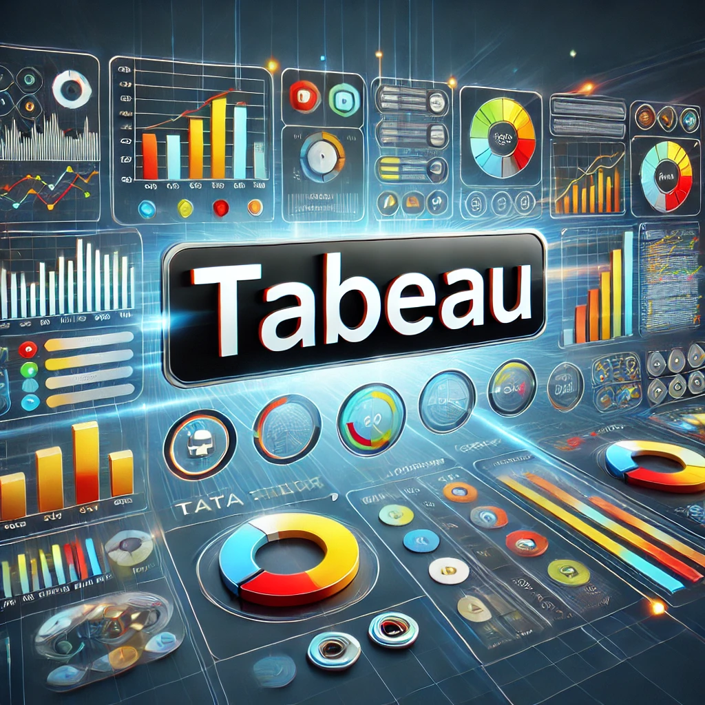
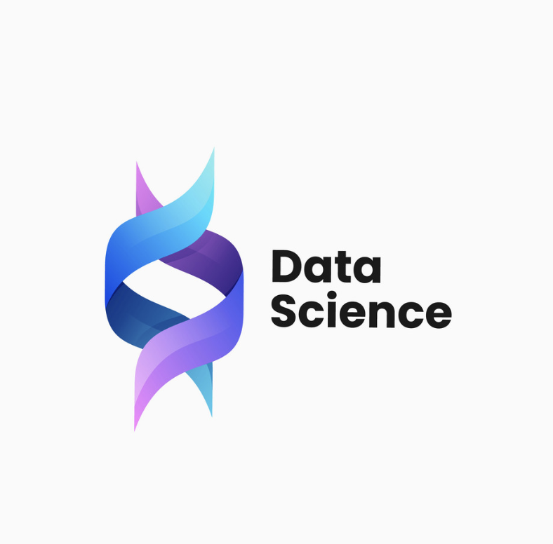

Python, Machine Learning, AI, LaTeX, Git
In the "Attrition AI: Employee Churn Prediction" project, I worked with the IBM dataset from Kaggle to build a predictive model aimed at identifying employees most likely to leave the company. Using machine learning algorithms like Logistic Regression, Random Forest, and XGBoost, supplemented by Cosine similarity, I developed a model with an accuracy rate of 87%. The project was implemented using Python.
Python, Machine Learning, Kaggle, Excel
For the "Statistical Analysis of Automotive Fuel Economy" project, I utilized Python on Kaggle to explore and analyze large datasets. The exploratory data analysis (EDA) involved data filtration, cleaning, removing duplicates, and unnecessary columns. Hypothesis tests like the Chi-square, Mann-Whitney, and Fisher's Exact Test were conducted. Machine learning models such as Random Forest, KNN Regression, and XGBoost Regression were employed to predict fuel economy metrics, demonstrating proficiency in data science and machine learning techniques.
Python, Machine Learning, Time Series Analysis, Excel, Git
I leveraged 70 years of monthly data on inflation, unemployment, and bond yields to predict the U.S. Federal Funds Rate by developing a VARMA model (RMSE: 0.15, MAE: 0.06) after extensive preprocessing for stationarity; while traditional models like VAR and SARIMAX performed well, LSTM models struggled, and strong correlations emerged for bond yields (0.86) and inflation (0.71). I built a CI/CD pipeline and deployed the model via Flask for seamless real-time access by financial analysts and policy-makers, demonstrating the effectiveness of econometric approaches for data-driven decision-making.
Python, Machine Learning, Kaggle, Excel, Data Cleaning and visualization
In my Kaggle project "Popularity Analysis by Genre," I cleaned and preprocessed a dataset containing genre and popularity metrics to ensure robust analysis. I then utilized Python libraries such as Pandas, Matplotlib, and Seaborn to visualize trends and extract key insights on genre performance. Based on these findings, I delivered actionable, data-driven recommendations for content strategy, demonstrating the power of analytical approaches in guiding decision-making.

During my tenure at Capgemini, I transformed high-level business objectives into scalable, data-driven solutions. I began by streamlining operations—managing over 10 support tickets daily via Jira, ServiceNow, Heat, and SNOW—to reduce issue resolution times by 40% and maintain seamless project workflows. Leveraging AppDynamics, I built dynamic dashboards using CSV and Excel, cutting analysis time by 30%. I then employed HANA and ABAP to develop and debug 20+ reports with flawless success, while my implementation of a Transport Request system reduced deployment errors by 35% and improved system stability. In parallel, I led structured knowledge transfer sessions that enhanced team competency and ensured timely course completions.
Advancing our digital transformation, I utilized BW, Qlik Sense, and Qlik View to proactively manage high-priority tickets, decreasing resolution times by 25% through direct client interactions, and authored comprehensive SOPs that standardized processes and trimmed error resolution by 30%. Transitioning into Fiori development, I enhanced application functionalities and contributed over 100 hours to report development, all while maintaining robust stakeholder communications via Outlook and Microsoft Teams. To drive further efficiency, I integrated a scalable data pipeline with Azure Data Lake and Scylla DB—tripling data processing speeds and ensuring high-throughput, low-latency performance. My Power BI work optimized financial reporting for the RTR team, boosting cost accuracy by 20%, while SQL-driven analysis uncovered operational improvements that reduced inefficiencies by 15%. A standout achievement was leading an automation initiative that transformed a manual process into a fully automated system, slashing failure rates from 20% to 2% and saving over 10 hours of manual effort weekly. I also enhanced our cloud capabilities by deploying AWS services such as API Gateway, Lambda, CloudFormation, and DynamoDB, thereby improving system reliability and scalability in a cost-effective manner.
ABAP, HANA, JIRA, ServiceNow, Power BI, Tableau, Python, ETL, SQL, JAVA, Excel, Microsoft tools, AppDynamics, Splunk, AWS S3, Qlik Sense, Qlik View
In this project, I fetched data from predefined tables in the HANA database by writing ABAP reports utilizing SQL-like queries. I developed a repository for seamless code transfer and designed transition code that integrated interactive buttons for enhanced user interaction. Furthermore, I ensured the accuracy of the code through unit testing, achieving a 100% success rate. Additionally, I conducted runtime analysis to optimize performance and ensure the code met all functional requirements. This project showcased my skills in both ABAP development and data extraction from HANA databases.
JavaScript, HTML5, CSS, PHP, Excel, DBMS (MongoDB)

In the "Technical Discussion Support System" project, I developed a dynamic online platform using JavaScript, PHP, and a robust database system. This platform enabled users to engage in in-depth technical discussions and share expertise, fostering collaborative learning within the technical community. Through rigorous testing and validation, the platform achieved a 90% accuracy rate, ensuring reliable and efficient user interaction. The research findings from this project were successfully published in the International Conference on Information and Communication Networks (IC-ICN), highlighting the innovative contributions made.
SQL, Excel, Git
In this project, I executed advanced SQL queries on the "employee" database using the analyzing_employee_trend table. I aggregated employee counts by department and gender, computed average ages, and identified predominant job roles using GROUP BY and CASE statements. Additionally, I analyzed job satisfaction by education level and age, calculated attrition rates across age bands, and filtered for high-satisfaction segments among frequent travelers and married employees. This technical approach yielded actionable insights into workforce demographics, satisfaction, and retention.
HTML, CSS, Visual studio, Git

I developed my portfolio to highlight my projects and showcase my professional experience.
Tableau, Excel, Git

In my Tableau project, I have analyzed and visualized data across various sectors by creating interactive reports and dashboards. Through these projects, I have demonstrated my ability to extract meaningful insights and present them in a clear, visually engaging manner. Notable projects include an Airbnb Dashboard, where I analyzed key metrics and and an Employee Trend Project, which visualized workforce patterns and highlighted insights into employee demographics and attrition. These projects showcase my proficiency in data visualization, dashboard creation, and translating complex datasets into actionable insights. I invite you to explore these projects to gain a deeper understanding of my Tableau expertise.
Python, Google Colab, Excel, Git

In my Data Science project, I have completed the data cleaning process and am now planning to incorporate various essential steps to enhance the analysis. I aim to conduct Exploratory Data Analysis (EDA) to identify trends and patterns, followed by feature engineering to create meaningful variables and improve model performance. Additionally, I will focus on data visualization using tools like Matplotlib and Tableau to present insights effectively. To build predictive models, I plan to work on model selection and training, fine-tuning them through hyperparameter optimization for better accuracy. Evaluating model performance using appropriate metrics will also be a key step. Furthermore, I intend to explore deployment strategies using Flask or cloud platforms, automate workflows with data pipelines, and handle large datasets efficiently using Big Data technologies like Spark. Finally, I will ensure my findings are well-structured through storytelling and insights, making data-driven decision-making more impactful.